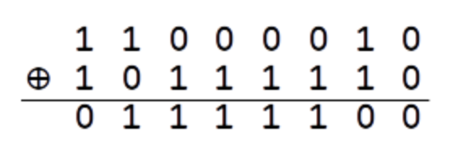
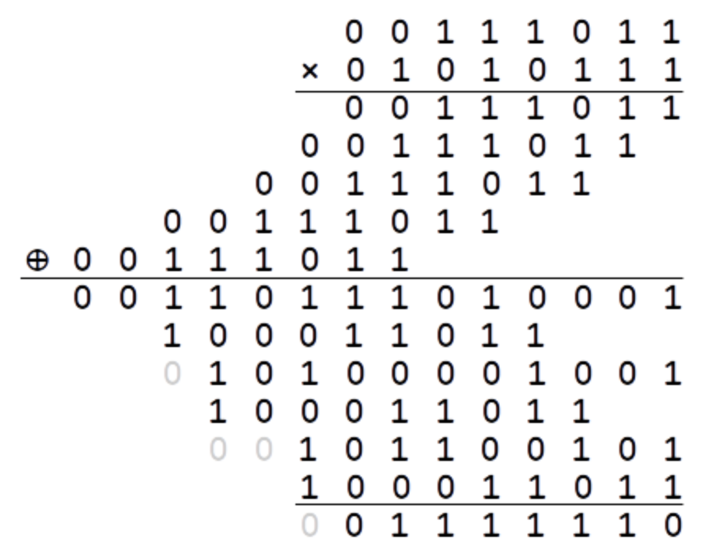
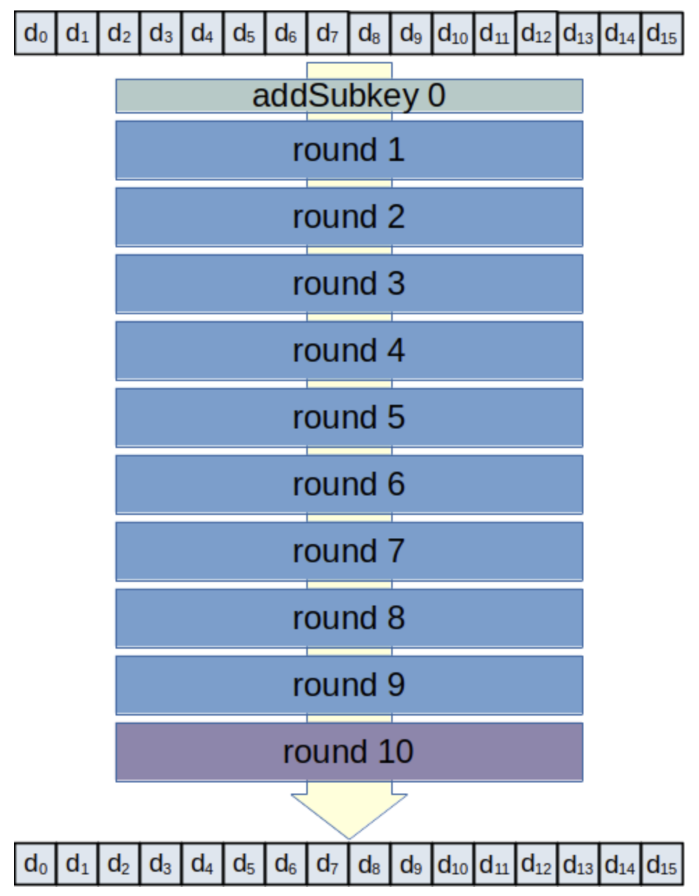
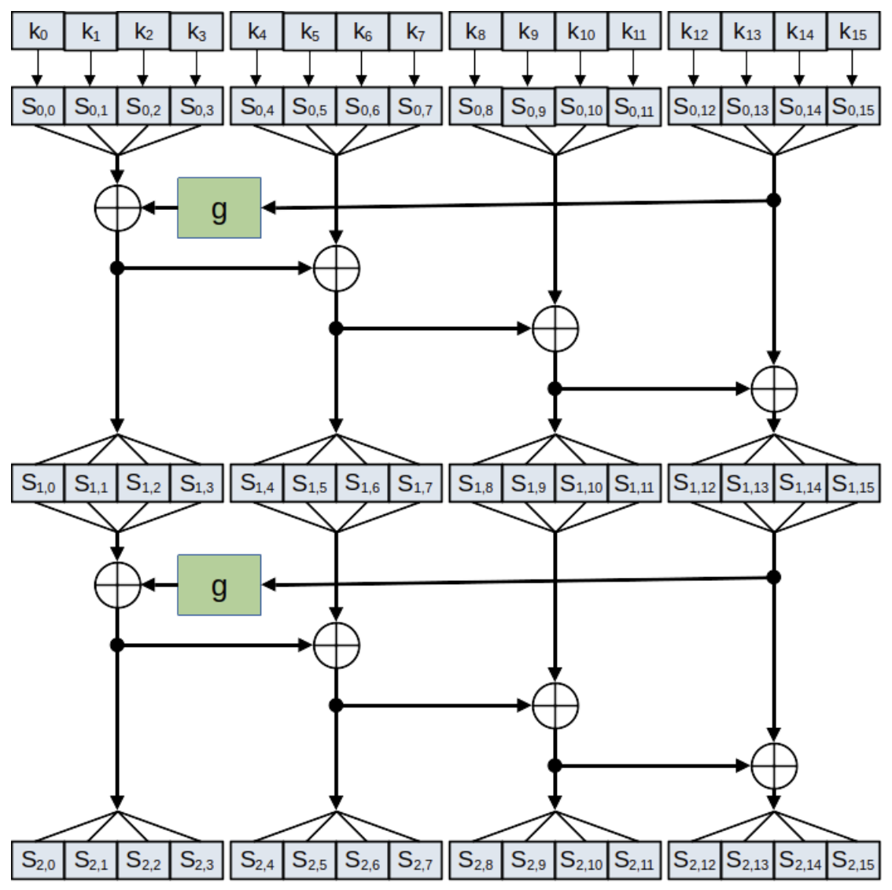
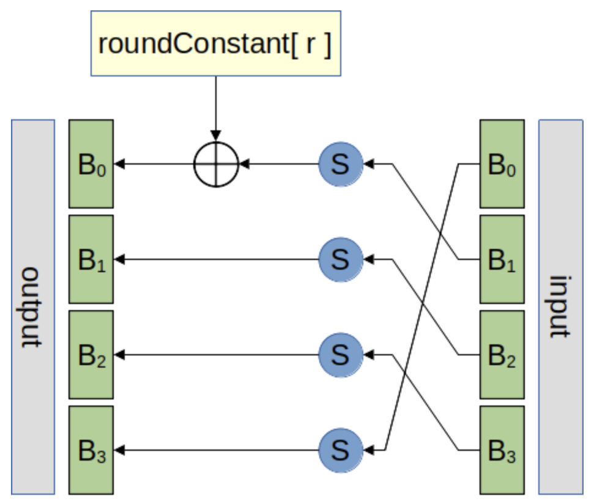
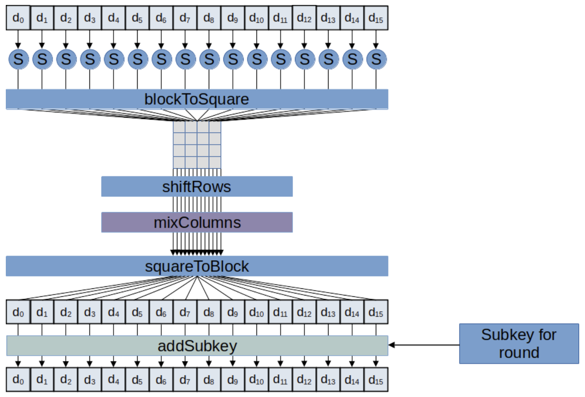

Application Showcase
To encrypt or decrypt a file, AES processes the file as a series of 16-byte blocks. It encrypts (or decrypts) a block containing the first 16 bytes of the file, then moves on and processes the next 16 bytes as a separate block. This is why the program expects plaintext and ciphertext input files that are a multiple of 16 bytes in length.
Many of AES's operations utilize an 8-bit finite field, or Galois field. This allows the system to compute byte values that work similarly to standard arithmetic operations: addition, subraction, multiplication, and division. The Galois Field defines these operations so that they never overflow and made to be invertible. This is important because the operations will allow us to encrypt, while the operations in reverse will allow us to decrypt. Below are examples of these operations.
Addition Ex: 0xC2 and 0xBE

Multiplication Ex: 0x3B and 0x57

AES encrypts and decrypts in 16-byte blocks. The steps of encryption use 11 different key values or subkeys. The first step is to add the initial subkey to the block using the addSubkey function. This is repeated for 10 more rounds of computation to fully encrypt the block. Each round executes the same steps to encrypt save for the last round, which omits a step. Decryption works by running the block through the same 11 round and subkeys except in reverse.

Subkey generation is specific to the information it is encrypting. The first subkey is simply the original 16-byte key. Each subsequent subkey is generated using the following procedure.

Shown above, k represents the bytes of the original key. S represents byte number j of the i-th subkey. Subkeys are made by combining bytes from the previous subkey using the XOR operation and a g function. Generation works with four bytes of the key at a time, referred to as words in the procedure.
The g function used follows the following diagram. It's purpose is to scramble byte information that is undetectable and reversible. The S shows where substitution functions are being used in each byte of the input word. Byte 1 gets a special roundConstant (r) added to it using XOR. RoundConstants are different for each round, but the same each time you run the program. In order from round 1 to 10 the roundConstants are 0x01, 0x02, 0x04, 0x08, 0x10, 0x20, 0x40, 0x80, 0x1b, 0x36.

Each round runs every byte included in the block through the same substitution function used in subkey generation. Then the bytes are arranged into a 2D array square, where two operations are performed: shiftRows and mixColumns. The bytes are tranmuted back into a 1D array, where addSubkey gets called with the next subkey. The first subkey is added to the block before the first round and all subsequent subkeys are added as a part of round computation.

The 16-byte block iteration cryptography is called ECB (Electronic Codebook) mode. It’s simple, but it has some disadvantages. For a real encryption application, we would probably not want every block to be independently encrypted and decrypted. This can leave us vulnerable to some types of attack. In the future I can improve the program to utilize a stronger encryption method that doesn't rely on the sequential block encryption.
Another improvement I can add would be to increase the robustness of the program such that it can accept files that are not exactly a multiple of 16-byte length. Right now that is implemented to ensure there is no mishaps when inverting operations to decrpyt, however if I include a check I can create a work-around that can allow for file sizes of any length.